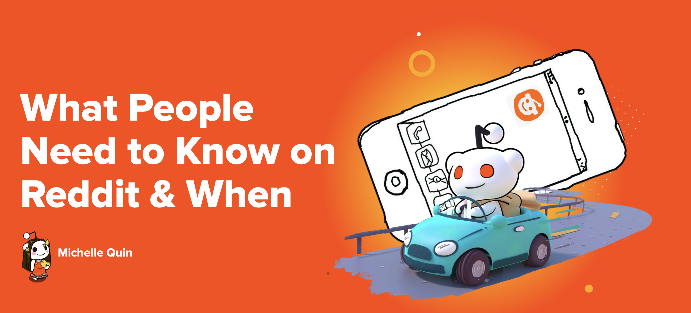
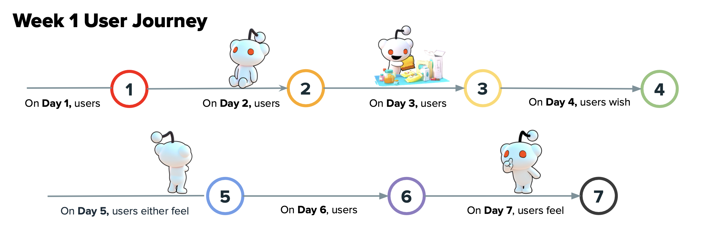
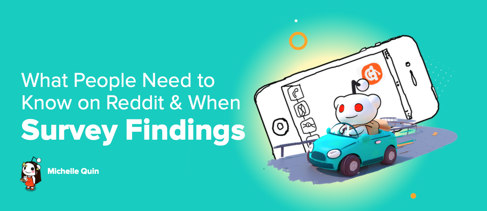
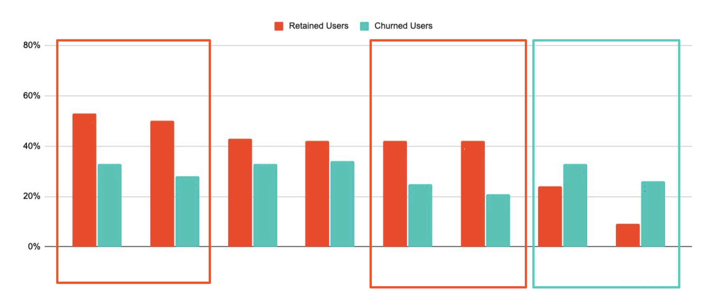

One of the most influential studies I've done at Reddit was my "What People Need to Know on Reddit & When" research work, which I presented to multiple product areas (Growth, Internationalization, Core Experiences, etc.) and to the entire company (All Hands, VP reviews). This study has had lasting, cross-organizational impact due to its deep dive into understanding what exactly user tasks and needs are during their first two weeks on Reddit, and what distinguishes newly retained users from churned users.
For this study, I took a mixed methods approach, conducting a survey on newly churned users vs. newly retained users, a diary study that followed first week new users and second week new users' usages of Reddit day to day, and follow-up 1:1 interviews. As a result of this study, we made significant changes to the way we approach onboarding, how to personalize the experience for newer users, how to drive retention in the critical initial period of account creation and usage, what features to focus on providing new user education for, and what features to take away, minimize, or rearrange.
I also produced a synthesis report specifically giving recommendations on areas for education vs. simplification on the platform based on this study, helping to reduce overall clutter and steer product focus back on what truly drives Reddit: our content and conversations.




Have feedback, questions, or just want to say hello? Feel free to reach out!